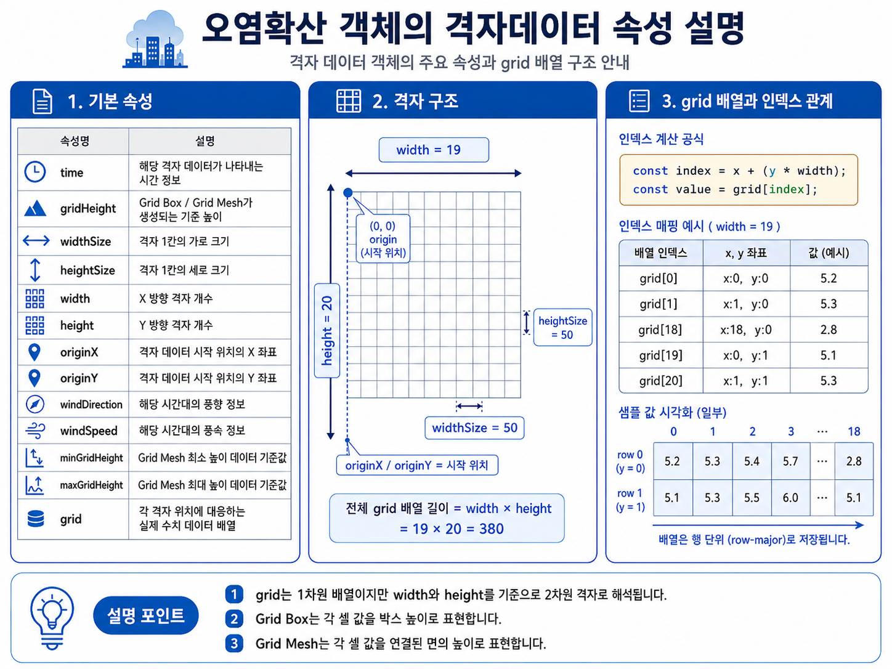
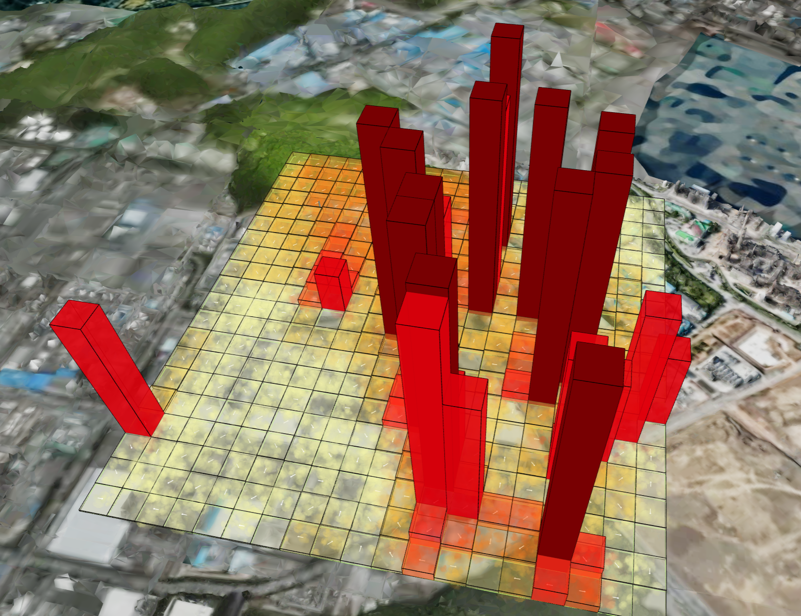
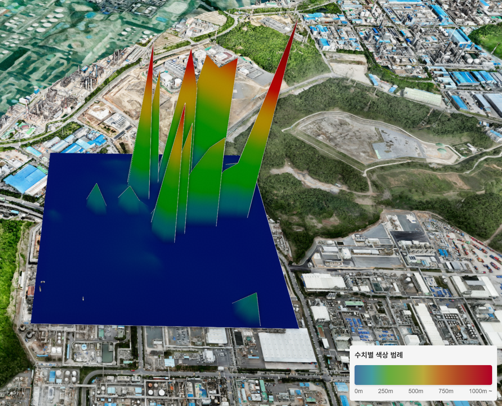
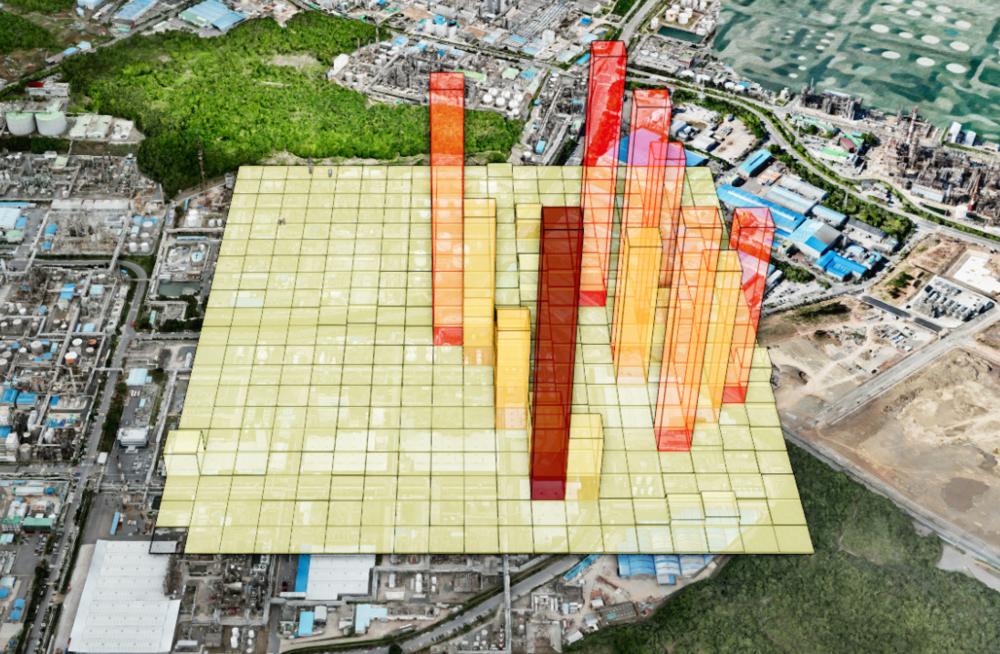
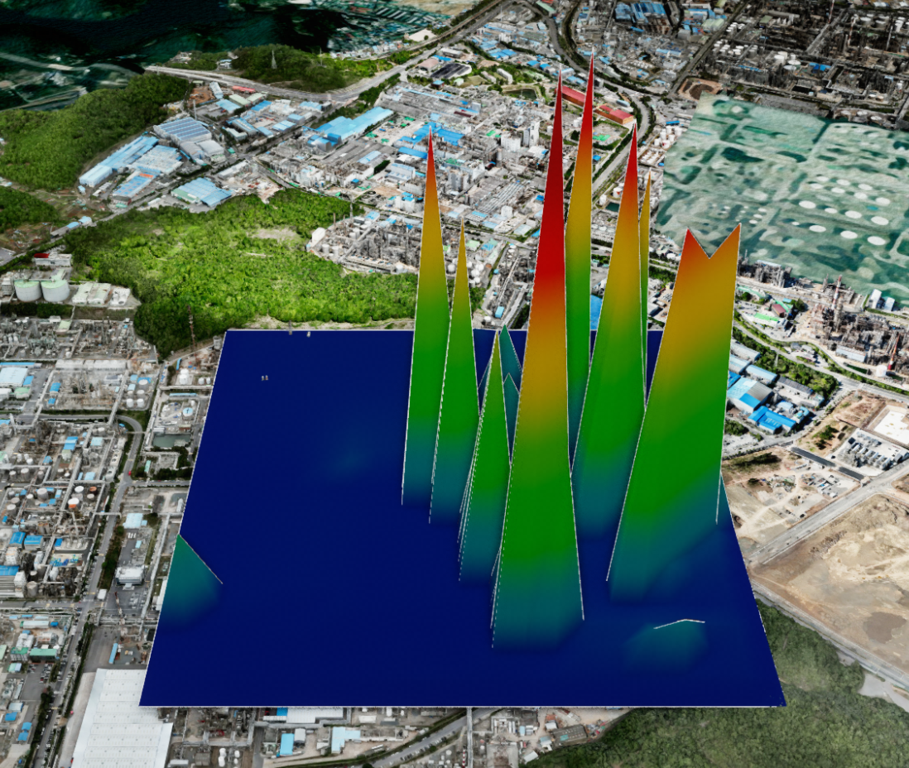

1. Addon 추가하기
* Grid Box와 Grid Mesh 기능을 사용하려면 오염확산의 내용과 마찬가지로
GESpreadObject addon을 먼저 활성화해야 합니다.
* 두 객체는 격자 데이터를 3D 형상으로 표현하는 기능이며, Particle 객체를 생성하지 않고 독립적으로 사용할 수 있습니다.
* 두 객체는 격자 데이터를 3D 형상으로 표현하는 기능이며, Particle 객체를 생성하지 않고 독립적으로 사용할 수 있습니다.
GeOnDT.addon(addonName) :
addon script를 추가하여 활성화하는 API
＜script src="/_____폴더경로_____/GESpreadObject.js" type="module">＜/script＞
GeOnDT.addon(GESpreadObject);
const analy = app.getAnalysis('Particle');
2. 격자 데이터 구성하기
* Grid Box와 Grid Mesh는 동일한 형태의 격자 데이터(data)를 사용합니다.
* 각 격자의 실제 수치는 grid 1차원 배열에 저장하며, 일반적으로 grid.length === width * height가 되도록 구성합니다.
* originX / originY를 기준으로 격자 영역이 배치되고, widthSize / heightSize가 각 격자 한 칸의 크기를 결정합니다.
* 각 격자의 실제 수치는 grid 1차원 배열에 저장하며, 일반적으로 grid.length === width * height가 되도록 구성합니다.
* originX / originY를 기준으로 격자 영역이 배치되고, widthSize / heightSize가 각 격자 한 칸의 크기를 결정합니다.
options.data / GridData
widthSizenumber :
격자 한 칸의 가로 크기
heightSizenumber : 격자 한 칸의 세로 크기
widthnumber : X 방향 격자 개수
heightnumber : Y 방향 격자 개수
originXnumber : 격자 시작 X 지리 좌표
originYnumber : 격자 시작 Y 지리 좌표
gridHeightnumber : 3D 객체가 생성될 기준 높이 (미지정 시 기본값 100)
gridarray : 각 격자의 수치를 저장하는 1차원 배열
heightSizenumber : 격자 한 칸의 세로 크기
widthnumber : X 방향 격자 개수
heightnumber : Y 방향 격자 개수
originXnumber : 격자 시작 X 지리 좌표
originYnumber : 격자 시작 Y 지리 좌표
gridHeightnumber : 3D 객체가 생성될 기준 높이 (미지정 시 기본값 100)
gridarray : 각 격자의 수치를 저장하는 1차원 배열
const gridData = [{
widthSize: 50,
heightSize: 50,
width: 19,
height: 20,
originX: 129.3338772330962,
originY: 35.49181010514321,
gridHeight: 100,
grid: [
29.3, 31.2, 32.5, 32.5
// ... width * height 개수
]
}];
const baseOption = {
name: 'GRID_VISUAL_SAMPLE',
data: gridData
};
격자 데이터 구조를 설명하는 이미지

3. Grid Box 생성하기
* Grid Box는 각 격자의 수치를
독립적인 Box 객체의 높이로 표현합니다.
* 개별 격자 값의 크기를 직접 비교하거나, 격자 단위 데이터 분포를 명확하게 확인할 때 사용할 수 있습니다.
* createGridBox(options)는 Particle 초기화 없이 전달받은 options.data를 직접 처리하여 객체를 생성합니다.
* 개별 격자 값의 크기를 직접 비교하거나, 격자 단위 데이터 분포를 명확하게 확인할 때 사용할 수 있습니다.
* createGridBox(options)는 Particle 초기화 없이 전달받은 options.data를 직접 처리하여 객체를 생성합니다.
UAnalyParticle.createGridBox(options) :
격자 데이터를 각 격자별 Box 형상으로 생성하는 API
options.namestring :
생성 객체 이름 *필수 입력
options.dataarray : Grid Box 생성에 사용할 격자 데이터 *필수 입력
options.visibleboolean : 생성 직후 가시화 여부 (기본값 true)
options.gridBoxMaxHeightnumber : Box 높이의 최대 제한값 (기본값 1000)
options.gridBoxColorColor : legend가 없을 경우 적용되는 기본 색상 (기본값 0x4474A0)
options.gridBoxOpacitynumber : legend가 없을 경우 적용되는 기본 투명도 (기본값 0.6)
options.gridBoxLineColorColor : Box 외곽선 색상 (기본값 0x000000)
options.gridModestring : "spread" 사용 시 정규화된 allocation 값을 범례 정보에 포함
options.legendfunction : Box 색상과 투명도를 데이터 값에 따라 설정하는 함수
options.dataarray : Grid Box 생성에 사용할 격자 데이터 *필수 입력
options.visibleboolean : 생성 직후 가시화 여부 (기본값 true)
options.gridBoxMaxHeightnumber : Box 높이의 최대 제한값 (기본값 1000)
options.gridBoxColorColor : legend가 없을 경우 적용되는 기본 색상 (기본값 0x4474A0)
options.gridBoxOpacitynumber : legend가 없을 경우 적용되는 기본 투명도 (기본값 0.6)
options.gridBoxLineColorColor : Box 외곽선 색상 (기본값 0x000000)
options.gridModestring : "spread" 사용 시 정규화된 allocation 값을 범례 정보에 포함
options.legendfunction : Box 색상과 투명도를 데이터 값에 따라 설정하는 함수
return array :
options.data의 index별 Grid Box Group 배열
기본 Grid Box 생성
필수 격자 데이터와 Grid Box 전용 옵션을 설정한 뒤 createGridBox(options)를 호출합니다.
필수 격자 데이터와 Grid Box 전용 옵션을 설정한 뒤 createGridBox(options)를 호출합니다.
const boxOption = {
name: 'GRID_BOX_SAMPLE',
data: gridData,
visible: true,
gridBoxMaxHeight: 1000,
gridBoxColor: '#4474A0',
gridBoxOpacity: 0.6,
gridBoxLineColor: '#000000'
};
// analy.initialize(), analy.active() 호출 불필요
const boxGroups = analy.createGridBox(boxOption);
* 예를 들어 원본 grid 값이 1500이고
gridBoxMaxHeight가 1000이면 Box는 최대 제한값을 기준으로 생성됩니다.
* 값이 0보다 작은 경우에는 높이가 0보다 작아지지 않도록 처리됩니다.
* 값이 0보다 작은 경우에는 높이가 0보다 작아지지 않도록 처리됩니다.
Grid Box 범례 설정
* Grid Box는 options.legend 함수를 이용하여 각 격자 수치에 따라 Box의 색상과 투명도를 개별적으로 설정할 수 있습니다.
* legend 함수는 Grid Box를 생성하는 과정에서 각 격자 데이터마다 호출되며, 현재 격자의 수치 정보가 info 객체로 전달됩니다.
* legend 함수에서 반환한 color와 opacity 값이 해당 격자 Box의 Material에 적용됩니다.
* Grid Box는 options.legend 함수를 이용하여 각 격자 수치에 따라 Box의 색상과 투명도를 개별적으로 설정할 수 있습니다.
* legend 함수는 Grid Box를 생성하는 과정에서 각 격자 데이터마다 호출되며, 현재 격자의 수치 정보가 info 객체로 전달됩니다.
* legend 함수에서 반환한 color와 opacity 값이 해당 격자 Box의 Material에 적용됩니다.
options.legend(info) :
Grid Box의 데이터 수치에 따라 색상과 투명도를 설정하는 함수
infoobject :
현재 생성 중인 격자의 범례 판단 정보
info.valuenumber : 현재 격자에 저장된 원본 grid 수치
info.allocationnumber | undefined : gridMode가 "spread"인 경우 사용할 수 있는 정규화 수치
gridMode가 "grid"인 경우에는 undefined가 될 수 있음
info.typestring : 범례 대상 객체 타입, Grid Box의 경우 'box'
info.valuenumber : 현재 격자에 저장된 원본 grid 수치
info.allocationnumber | undefined : gridMode가 "spread"인 경우 사용할 수 있는 정규화 수치
gridMode가 "grid"인 경우에는 undefined가 될 수 있음
info.typestring : 범례 대상 객체 타입, Grid Box의 경우 'box'
return object :
Grid Box에 적용할 색상 및 투명도 정보
colorColor :
Box에 적용할 색상
opacitynumber : Box에 적용할 투명도 (0 ~ 1)
opacitynumber : Box에 적용할 투명도 (0 ~ 1)
범례 처리 방식
* 일반적인 Grid Box 범례는 info.value를 기준으로 구간을 나누어 설정합니다.
* 높은 수치에는 진한 색상, 낮은 수치에는 옅은 색상을 반환하는 방식으로 표현할 수 있습니다.
* gridMode: 'spread'를 사용하는 경우에는 필요에 따라 info.allocation을 기준으로 범례를 구성할 수도 있습니다.
* legend 함수를 지정하지 않으면 gridBoxColor / gridBoxOpacity에 설정한 기본값을 사용합니다.
* 일반적인 Grid Box 범례는 info.value를 기준으로 구간을 나누어 설정합니다.
* 높은 수치에는 진한 색상, 낮은 수치에는 옅은 색상을 반환하는 방식으로 표현할 수 있습니다.
* gridMode: 'spread'를 사용하는 경우에는 필요에 따라 info.allocation을 기준으로 범례를 구성할 수도 있습니다.
* legend 함수를 지정하지 않으면 gridBoxColor / gridBoxOpacity에 설정한 기본값을 사용합니다.
function gridBoxLegend(info) {
// info.value
// - 현재 격자의 실제 grid 수치
//
// info.allocation
// - gridMode가 'spread'인 경우 사용할 수 있는 정규화 수치
//
// info.type
// - Grid Box 범례 호출 시 'box'
if (info.type !== 'box') return;
// 원본 grid 수치를 기준으로 색상/투명도 구간 설정
if (info.value > 500) {
return {
color: '#b10026',
opacity: 0.7
};
}
if (info.value > 100) {
return {
color: '#fc4e2a',
opacity: 0.5
};
}
if (info.value > 50) {
return {
color: '#feb24c',
opacity: 0.4
};
}
return {
color: '#4474A0',
opacity: 0.3
};
}
const boxOption = {
name: 'GRID_BOX_SAMPLE',
data: gridData,
gridMode: 'grid',
gridBoxMaxHeight: 1000,
gridBoxColor: '#4474A0',
gridBoxOpacity: 0.6,
// Grid Box 생성 시 사용할 범례 함수
legend: gridBoxLegend
};
const boxGroups = analy.createGridBox(boxOption);
spread 모드에서 allocation을 사용하는 예
* 동일한 legend 함수에서 info.allocation 값이 존재하는지 확인한 뒤 정규화 수치를 기준으로 색상과 투명도를 적용할 수도 있습니다.
* 동일한 legend 함수에서 info.allocation 값이 존재하는지 확인한 뒤 정규화 수치를 기준으로 색상과 투명도를 적용할 수도 있습니다.
function gridBoxSpreadLegend(info) {
if (info.type !== 'box') return;
if (info.allocation !== undefined) {
if (info.allocation > 0.1) {
return {color: '#b10026', opacity: 0.7};
}
if (info.allocation > 0.05) {
return {color: '#fc4e2a', opacity: 0.5};
}
return {color: '#ffffcc', opacity: 0.2};
}
// allocation이 없는 경우 원본 grid 수치 사용
return {
color: '#4474A0',
opacity: 0.3
};
}
boxOption.gridMode = 'spread';
boxOption.legend = gridBoxSpreadLegend;
analy.createGridBox(boxOption);
Grid Box 가시화
생성된 Grid Box 전체 또는 특정 data index의 가시화 여부를 변경할 수 있습니다.
생성된 Grid Box 전체 또는 특정 data index의 가시화 여부를 변경할 수 있습니다.
UAnalyParticle.showGridBox(visible, name, index) :
생성된 Grid Box의 가시화 여부를 설정하는 API
visibleboolean :
가시화 여부
namestring : createGridBox(options) 호출 시 지정한 이름
indexnumber : 가시화할 data index, 생략 시 전체 대상
namestring : createGridBox(options) 호출 시 지정한 이름
indexnumber : 가시화할 data index, 생략 시 전체 대상
// 전체 data 가시화
analy.showGridBox(true, boxOption.name);
// data[1]만 가시화
analy.showGridBox(true, boxOption.name, 1);
// 숨김
analy.showGridBox(false, boxOption.name);
Grid Box 생성 결과 이미지

4. Grid Mesh 생성하기
* Grid Mesh는 각 격자 값을 개별 Box로 표현하지 않고,
인접한 격자의 높이를 연결한 연속적인 Mesh로 표현합니다.
* 데이터의 전체적인 분포, 높이 변화, 공간적인 연결성을 확인할 때 적합합니다.
* Grid Box와 동일하게 Particle 객체 생성 없이 createGridMesh(options)만으로 생성할 수 있습니다.
* 데이터의 전체적인 분포, 높이 변화, 공간적인 연결성을 확인할 때 적합합니다.
* Grid Box와 동일하게 Particle 객체 생성 없이 createGridMesh(options)만으로 생성할 수 있습니다.
UAnalyParticle.createGridMesh(options) :
격자 수치를 연속적인 3D Mesh 형상으로 생성하는 API
options.namestring :
생성 객체 이름 *필수 입력
options.dataarray : Grid Mesh 생성에 사용할 격자 데이터 *필수 입력
options.gridMeshMaxHeightnumber | array : Grid Mesh의 높이 제한 및 최대 기준값
options.gridMeshOpacitynumber : Grid Mesh 투명도 (기본값 1)
options.gridMeshRationumber : 원본 수치에 적용할 높이 축척 비율 (1 : gridMeshRatio)
options.gridMeshLogConstantnumber : 데이터 높이 로그 변환에 사용하는 상수 (기본값 1000)
options.gridMeshSelectColorColor : Grid Mesh 정보 조회 시 선택 영역 색상
options.legendfunction : 높이 구간별 색상을 정의하는 범례 함수
options.dataarray : Grid Mesh 생성에 사용할 격자 데이터 *필수 입력
options.gridMeshMaxHeightnumber | array : Grid Mesh의 높이 제한 및 최대 기준값
options.gridMeshOpacitynumber : Grid Mesh 투명도 (기본값 1)
options.gridMeshRationumber : 원본 수치에 적용할 높이 축척 비율 (1 : gridMeshRatio)
options.gridMeshLogConstantnumber : 데이터 높이 로그 변환에 사용하는 상수 (기본값 1000)
options.gridMeshSelectColorColor : Grid Mesh 정보 조회 시 선택 영역 색상
options.legendfunction : 높이 구간별 색상을 정의하는 범례 함수
return array :
생성된 Grid Mesh 객체 배열
Grid Mesh 생성
격자 데이터와 높이 표현 옵션을 설정한 뒤 createGridMesh(options)를 호출합니다.
격자 데이터와 높이 표현 옵션을 설정한 뒤 createGridMesh(options)를 호출합니다.
const meshOption = {
name: 'GRID_MESH_SAMPLE',
data: gridData,
gridMeshMaxHeight: 1000,
gridMeshOpacity: 0.8,
gridMeshRatio: 1,
gridMeshLogConstant: 1000
};
// analy.initialize(), analy.active() 호출 불필요
const meshes = analy.createGridMesh(meshOption);
Grid Mesh 범례 설정
* Grid Mesh는 options.legend 함수를 이용하여 높이 구간별 색상을 설정할 수 있습니다.
* Grid Box 범례가 각 셀마다 color / opacity 객체를 반환하는 방식이라면, Grid Mesh 범례는 높이값 : 색상 형태의 객체를 한 번에 반환합니다.
* 반환된 높이 구간은 Mesh Shader에서 각 정점의 높이를 기준으로 색상을 결정할 때 사용됩니다.
* Grid Mesh는 options.legend 함수를 이용하여 높이 구간별 색상을 설정할 수 있습니다.
* Grid Box 범례가 각 셀마다 color / opacity 객체를 반환하는 방식이라면, Grid Mesh 범례는 높이값 : 색상 형태의 객체를 한 번에 반환합니다.
* 반환된 높이 구간은 Mesh Shader에서 각 정점의 높이를 기준으로 색상을 결정할 때 사용됩니다.
options.legend(info) :
Grid Mesh의 높이 구간별 색상을 설정하는 함수
infoobject :
범례 대상 객체 정보
info.typestring : 범례 대상 객체 타입, Grid Mesh의 경우 'mesh'
info.typestring : 범례 대상 객체 타입, Grid Mesh의 경우 'mesh'
return object :
높이 구간과 각 구간에 적용할 색상 정보
keynumber :
색상을 적용할 기준 높이 값
valueColor : 해당 높이 구간에 적용할 색상
valueColor : 해당 높이 구간에 적용할 색상
Grid Mesh 범례 데이터 구성
* 반환 객체의 Key는 Mesh 높이 기준값이고 Value는 해당 구간의 색상입니다.
* 예를 들어 0, 100, 250, 500, 1000과 같이 높이 구간을 정의할 수 있습니다.
* Grid Mesh는 각 높이 구간 사이의 값을 이용하여 연속적인 색상 표현을 구성합니다.
* 범례의 최대 높이 값은 gridMeshMaxHeight와 함께 데이터 가시화 범위를 구성할 때 사용하는 것이 좋습니다.
* 반환 객체의 Key는 Mesh 높이 기준값이고 Value는 해당 구간의 색상입니다.
* 예를 들어 0, 100, 250, 500, 1000과 같이 높이 구간을 정의할 수 있습니다.
* Grid Mesh는 각 높이 구간 사이의 값을 이용하여 연속적인 색상 표현을 구성합니다.
* 범례의 최대 높이 값은 gridMeshMaxHeight와 함께 데이터 가시화 범위를 구성할 때 사용하는 것이 좋습니다.
function gridMeshLegend(info) {
// Grid Mesh 범례 요청인 경우에만 높이별 색상 정보 반환
if (info.type !== 'mesh') return;
return {
// 높이 : 색상
0: '#4474A0',
100: '#449da0',
250: '#68AD3D',
400: '#84ad3d',
550: '#BCAB3C',
700: '#C1712C',
850: '#B24924',
1000: '#b10026'
};
}
const meshOption = {
name: 'GRID_MESH_SAMPLE',
data: gridData,
gridMeshMaxHeight: 1000,
gridMeshOpacity: 0.8,
gridMeshRatio: 1,
gridMeshLogConstant: 1000,
// Grid Mesh 높이 구간별 범례
legend: gridMeshLegend
};
const meshes = analy.createGridMesh(meshOption);
Grid Box와 Grid Mesh 범례 반환값 차이
* Grid Box : 각 격자마다 { color, opacity } 형태의 객체를 반환합니다.
* Grid Mesh : { 높이값: 색상 } 형태로 여러 높이 구간을 한 번에 반환합니다.
* 따라서 동일한 legend 함수를 공유하는 경우에는 info.type을 확인하여 Box와 Mesh의 반환 형식을 구분해야 합니다.
* Grid Box : 각 격자마다 { color, opacity } 형태의 객체를 반환합니다.
* Grid Mesh : { 높이값: 색상 } 형태로 여러 높이 구간을 한 번에 반환합니다.
* 따라서 동일한 legend 함수를 공유하는 경우에는 info.type을 확인하여 Box와 Mesh의 반환 형식을 구분해야 합니다.
function gridVisualLegend(info) {
// Grid Box 범례
if (info.type === 'box') {
if (info.value > 500) {
return {color: '#b10026', opacity: 0.7};
}
if (info.value > 100) {
return {color: '#fc4e2a', opacity: 0.5};
}
return {color: '#4474A0', opacity: 0.3};
}
// Grid Mesh 범례
if (info.type === 'mesh') {
return {
0: '#4474A0',
100: '#449da0',
250: '#68AD3D',
400: '#84ad3d',
550: '#BCAB3C',
700: '#C1712C',
850: '#B24924',
1000: '#b10026'
};
}
}
boxOption.legend = gridVisualLegend;
meshOption.legend = gridVisualLegend;
analy.createGridBox(boxOption);
analy.createGridMesh(meshOption);
Grid Mesh 가시화 및 속성 변경
생성된 Grid Mesh의 가시화, 투명도, 높이 축척, 최대 높이, 로그 변환 상수를 변경할 수 있습니다.
생성된 Grid Mesh의 가시화, 투명도, 높이 축척, 최대 높이, 로그 변환 상수를 변경할 수 있습니다.
UAnalyParticle.showGridMesh(visible, name, index) :
Grid Mesh의 가시화 여부를 설정하는 API
visibleboolean : 가시화 여부
namestring : 생성 시 지정한 이름
indexnumber : 대상 index, 생략 가능
UAnalyParticle.setGridMeshOpacity(opacity) :
Grid Mesh 투명도를 설정하는 APInamestring : 생성 시 지정한 이름
indexnumber : 대상 index, 생략 가능
opacitynumber : 투명도 (0 ~ 1)
UAnalyParticle.setGridMeshRatio(ratio) :
Grid Mesh 데이터 높이 축척 비율을 변경하는 API
rationumber : 높이 축척 비율
UAnalyParticle.setGridMeshMaxHeight(value) :
Grid Mesh의 최대 높이 기준을 변경하는 API
valuenumber | array : 최대 높이 기준
UAnalyParticle.setGridMeshLogConstant(value) :
Grid Mesh의 로그 높이 변환 상수를 변경하는 API
valuenumber : 로그 변환 상수
analy.showGridMesh(true, meshOption.name);
// 투명도 변경
analy.setGridMeshOpacity(0.5);
// 높이 축척 변경
analy.setGridMeshRatio(10);
// 최대 높이 기준 변경
analy.setGridMeshMaxHeight(500);
// 로그 변환 상수 변경
analy.setGridMeshLogConstant(1000);
* gridMeshRatio 값이 커질수록 화면에 표현되는 높이는 상대적으로 낮아집니다.
* gridMeshLogConstant는 데이터 값의 범위 차이가 큰 경우 높이 표현을 조정하는 데 사용합니다.
* 일부 Grid Mesh 속성 변경 API는 생성된 Mesh를 새로운 설정 기준으로 다시 구성합니다.
* gridMeshLogConstant는 데이터 값의 범위 차이가 큰 경우 높이 표현을 조정하는 데 사용합니다.
* 일부 Grid Mesh 속성 변경 API는 생성된 Mesh를 새로운 설정 기준으로 다시 구성합니다.
Grid Mesh 생성 결과 이미지

5. Grid Box / Grid Mesh 비교하기
* Grid Box와 Grid Mesh는 동일한 격자 데이터를 사용하지만
데이터를 표현하는 방식과 목적에 차이가 있습니다.
Grid Box
- 각 격자를 독립된 Box로 표현합니다.
- 개별 격자 값의 차이를 명확하게 확인하기 좋습니다.
- Box의 높이가 해당 격자의 데이터 수치를 나타냅니다.
- 격자 단위의 구분이 중요한 데이터에 적합합니다.
Grid Mesh
- 인접한 격자 값을 하나의 연속적인 Mesh로 연결합니다.
- 전체적인 데이터 분포와 공간적인 변화 확인에 적합합니다.
- 높이 비율, 로그 변환, Morph 등 연속 표면 표현에 필요한 기능을 사용할 수 있습니다.
Grid Box
- 각 격자를 독립된 Box로 표현합니다.
- 개별 격자 값의 차이를 명확하게 확인하기 좋습니다.
- Box의 높이가 해당 격자의 데이터 수치를 나타냅니다.
- 격자 단위의 구분이 중요한 데이터에 적합합니다.
Grid Mesh
- 인접한 격자 값을 하나의 연속적인 Mesh로 연결합니다.
- 전체적인 데이터 분포와 공간적인 변화 확인에 적합합니다.
- 높이 비율, 로그 변환, Morph 등 연속 표면 표현에 필요한 기능을 사용할 수 있습니다.
동일한 grid 데이터를 왼쪽은 Grid Box, 오른쪽은 Grid Mesh로 출력한 비교 이미지


6. 객체 제거하기
* 가시화만 중지하는 경우에는 show API를 사용하고,
더 이상 사용하지 않는 경우에는 remove API로 생성 객체와 관련 리소스를 제거합니다.
UAnalyParticle.removeGridBox(name) :
createGridBox(options)로 생성한 Grid Box 객체를 제거하는 API
namestring :
제거할 Grid Box 생성 이름
UAnalyParticle.removeGridMesh(name) :
createGridMesh(options)로 생성한 Grid Mesh 객체를 제거하는 API
namestring :
제거할 Grid Mesh 생성 이름
// 가시화만 중지
analy.showGridBox(false, boxOption.name);
analy.showGridMesh(false, meshOption.name);
// Grid Box 제거
analy.removeGridBox(boxOption.name);
// Grid Mesh 제거
analy.removeGridMesh(meshOption.name);